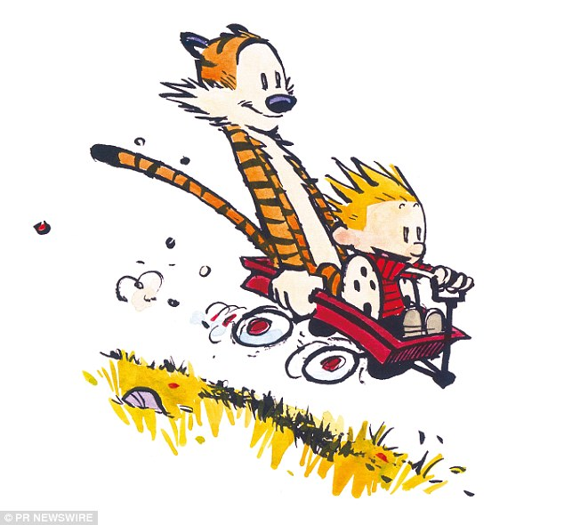

Barney's Dad was really bad so Barney hatched a plan,
When his dad said "Eat your peas,"
Barney shouted, "No!" and ran.
Barney tricked his mean old dad and locked him in the cellar,
Barney's Mom never found out where he'd gone,
Cause Barney didn't tell her.
There his dad spent his life eating mice and gruel,
With every bite for fifty years,
He was sorry he'd been cruel.
Calvin: Everybody seeks happiness! Not me, though! That's the difference between me and the rest of the world. Happiness isn't good enough for me! I demand euphoria!
Calvin: They say the world is a stage. But obviously the play is unrehearsed and everybody is ad-libbing his lines.
Hobbes: Maybe that's why it's hard to tell if we're living in a tragedy or a farce.
Calvin: We need more special effects and dance numbers.
